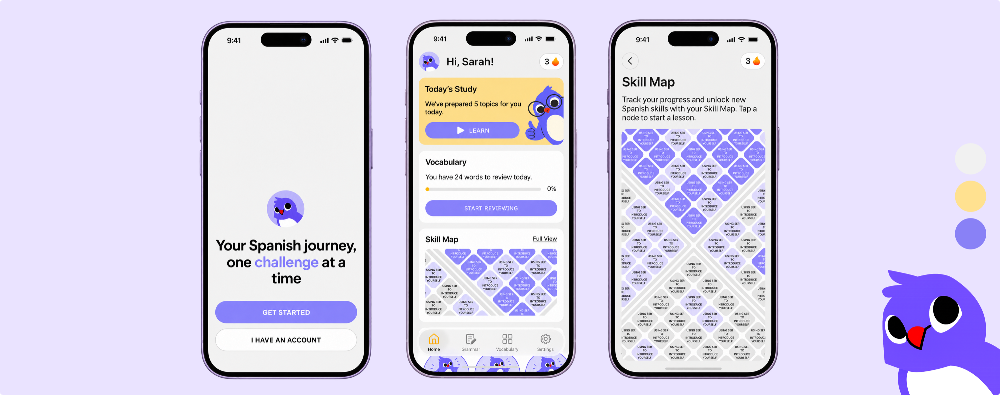
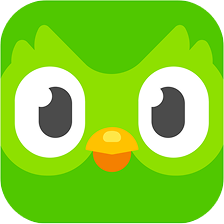
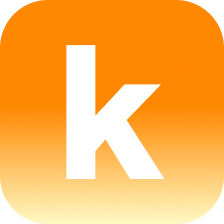
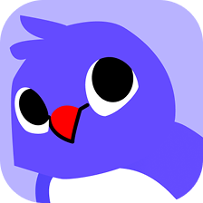
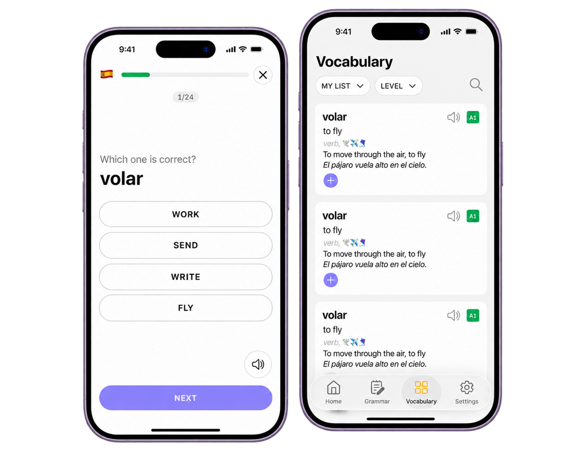
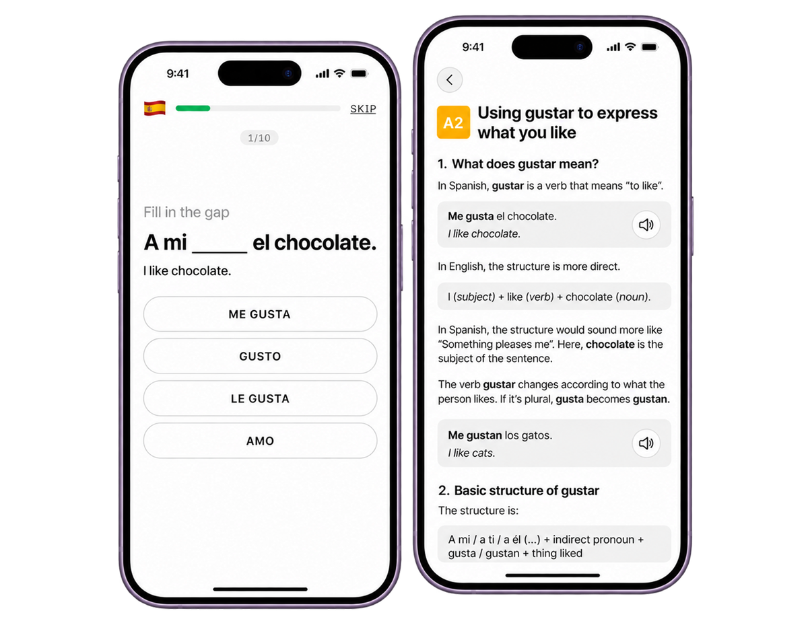
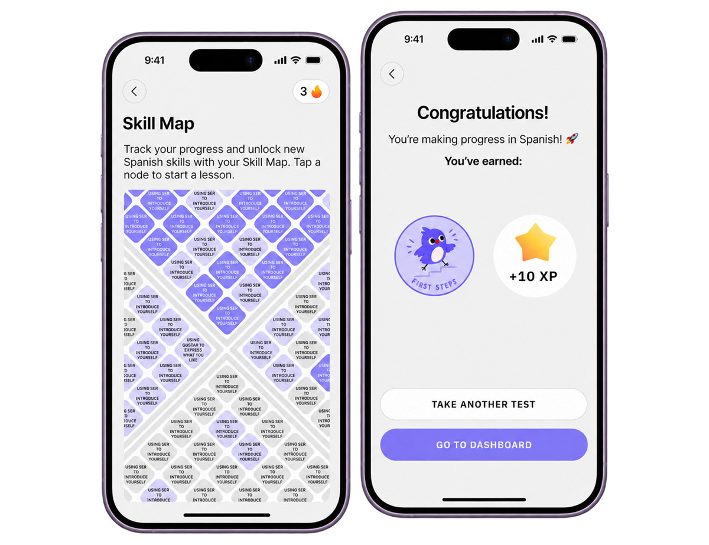
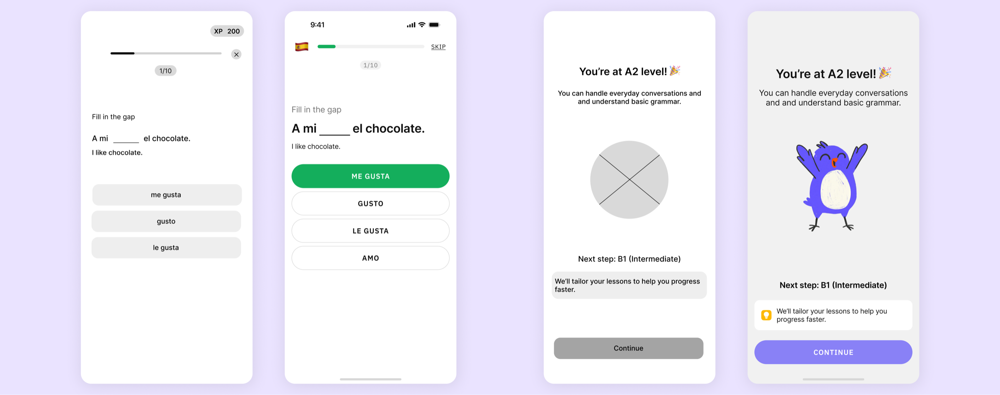
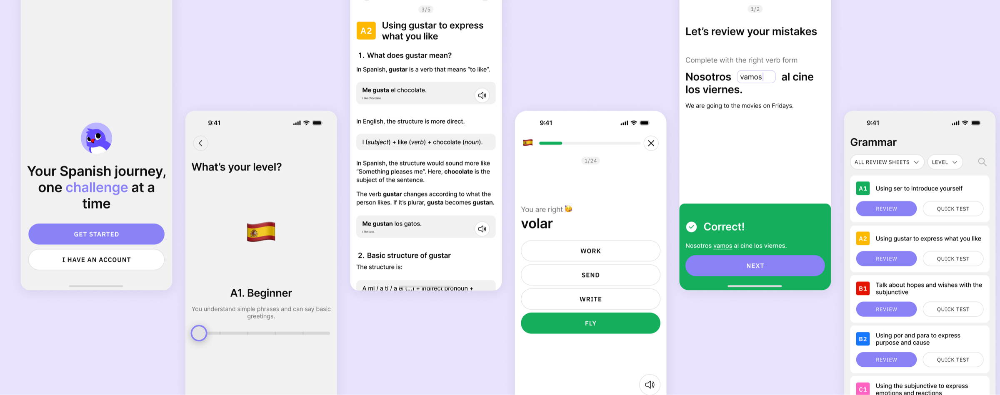

Motivated to learn
Learners are excited to improve their Spanish skills.
Redesigning Lory, an iOS language-learning app used by 20K+ learners

Lory is an existing iOS language-learning app designed to help users acquire vocabulary through flashcards. The project was commissioned by the app's founder, who wanted to explore ways to evolve the product into a more complete language-learning solution.
Over a period of six weeks, I worked closely with the founder to redesign the experience, introducing grammar learning, gamification features, and a more structured learning journey. The redesign is currently being prepared for implementation in a future product update.
Learners are excited to improve their Spanish skills.
They rely on different apps and websites for vocabulary and grammar.
Switching between platforms creates confusion and breaks the learning flow.
The lack of structure and progress visibility makes it hard to stay consistent.
Frustrated, many learners give up before reaching their goals.
Lory originally focused on vocabulary acquisition through flashcards, helping users learn and retain new words effectively. However, vocabulary alone is not enough to achieve fluency.
Without grammar instruction, learners may know many words but still struggle to build sentences and communicate confidently. This gap is common among language-learning tools, where vocabulary and grammar are often separated into different platforms.
Additionally, maintaining a consistent learning habit remains a major challenge for many learners.
The challenge was to transform Lory into a more complete language-learning experience by:
| App | Vocabulary | Grammar | Gamification |
|---|---|---|---|
 Duolingo |
|||
| Anki | |||
 Kwiziq |
|||
 Lory |
To better understand learner expectations, I gathered feedback from language learners within my network and the founder's community. Many participants were actively learning a foreign language themselves and shared their experiences with existing tools.
I also analyzed several popular learning platforms, including Duolingo, Anki, and Kwiziq.
Key Insights
These insights helped me define the direction of the redesign.
Spaced repetition through flashcards

Short lessons followed by exercises

Skill Map, XP and Streak to encourage consistency

Based on my research, I focused on three key pillars that would guide the entire experience.
1. Daily Learning
Create a personalized learning experience that encourages users to complete
small, manageable learning sessions every day.
2. Vocabulary Retention
Preserve Lory's original strength by continuing to support vocabulary
acquisition through a flashcard-based review system inspired by proven
learning methods.
3. Motivation Through Progress
Use gamification to make learning feel rewarding, encouraging users to
build long-term habits and remain engaged with the platform.

From low-fidelity wireframes to high-fidelity wireframes
I began by mapping the user journey and identifying the key touchpoints involved in a typical learning session.
This allowed me to create user flows connecting grammar lessons, vocabulary reviews, and progression tracking into a cohesive experience.
Once the overall structure was defined, I moved into low-fidelity wireframes to explore navigation patterns, content hierarchy, and feature placement. After validating the foundations of the experience, I developed high-fidelity interfaces and a consistent visual language that reflected the product's educational and approachable nature.
Throughout the process, my primary objective was to keep the experience simple and intuitive despite the addition of several new learning systems.

The final redesign transforms Lory from a vocabulary-focused app into a more complete language-learning experience. Based on my research, I expanded the product beyond flashcards by introducing structured grammar lessons, varied practice exercises, and a gamified Skill Map that makes progress easy to follow. By bringing vocabulary, grammar, and active practice into one place, the redesign aims to give learners a more cohesive experience — without relying on multiple apps or platforms to support their learning.
The redesign has been shared with Lory’s founder, with implementation planned for a future release.